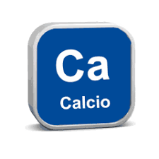
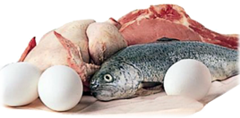

Beneficios de los helados
-

Aporta calcio
Una ración de helado con base de leche o de yogurt aporta hasta el 15% de las necesidades de calcio diarias. El calcio es un mineral muy importante para el cuerpo humano, ya que ayuda al crecimiento y protección de nuestros dientes y huesos.
-

Proteínas y vitaminas
Asimismo, el helado es rico en proteínas, vitaminas A, B2 y B6, C, D, E, fósforo, magnesio, sodio y potasio. Esto lo convierte en un alimento perfecto tanto para niños, como para adultos y ancianos.
-
Energía para el cuerpo
El helado contiene hidratos de carbono fundamentales para darte la energía que necesitas a lo largo del día. No te preocupes por la dieta. Otro de los beneficios del helado es que tan solo aportan el 10% de las calorías que necesitas al día. Además, siempre puedes encontrar su versión sin azúcar y sin gluten para disfrutar de este refrescante postre sin remordimientos. Los helados artesanales, por ejemplo, solo contienen un 6% de grasa.
-
Serás más feliz
Los helados contienen un aminoácido llamado triptófano, gracias al cual los niveles de serotonina aumentan. ¿Qué significa esto? Comer tu helado favorito mejorará tu estado de ánimo y reducirá los síntomas de la depresión. Además, reducirás el estrés especialmente con los helados de vainilla o chocolate
-
Hidratación
Comer un helado en días calurosos te aporta la hidratación que tu cuerpo necesita. Cuando sientas que el cansancio y el decaimiento por el calor te invaden es momento de tomarte un helado
-

Le gustan a todo el mundo
La industria heladera ha apostado por ampliar su abanico de sabores y texturas. Por eso hoy día es muy fácil encontrar un sabor que te guste. Incluso puedes hacer tus propias combinaciones para dar con tu helado perfecto.